保持年轻？你需要fashion way！
近来都流行讲“少女心”，但总要有一副年轻的皮囊，才能配得上少女心呀。那么现在都有哪些fashion way可以让你保持年轻状态，大胆拥抱少女心呢？
有一个颜色既可以泛起你的少女心，又能让你看上去够仙够in~ 号称2017最美流行色的“淡山茱萸粉（Pale Dogwood）”！粉中带一点点闪耀，奢华如它、高雅如它~
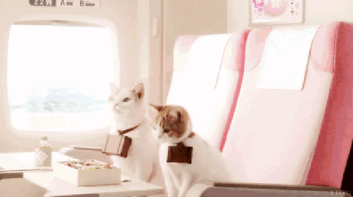国外这种颜色超级流行~从家居摆设、闺中豪车、衣着打扮、美妆小物、妆容等等都能看到这种color~狐狸菌喜欢的不得了，马上跟大家来分享！
家居类
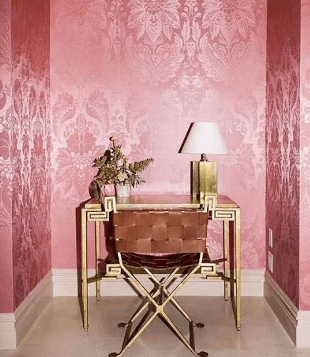淡山茱萸粉的印花墙纸、座椅，搭配金色的台灯架。看起来时髦又奢华~
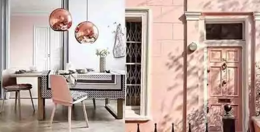外面看是淡山茱萸粉的外墙、走进屋有同色的灯罩和座椅~真是满足了那颗想脱俗的欲火之心~
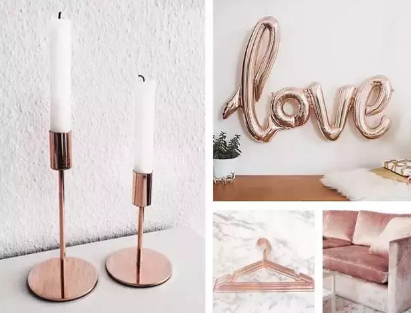不止装修，房屋内的摆设都可以是淡山茱萸粉~沙发、烛台、晾衣架完全OK~
穿搭类
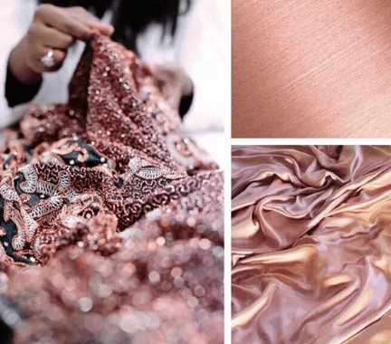淡山茱萸粉运用在丝绸面料最适合不过！作为日常穿搭，它在夏天既不会像亮片那么招眼，也不会显得无聊普通~所谓“低调的华丽”说的应该就是它~
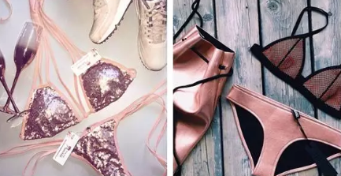想象一下在阳光沙滩上，一身淡山茱萸粉的比基尼是多么性感和可爱~
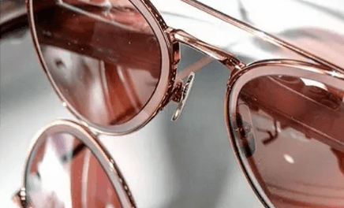 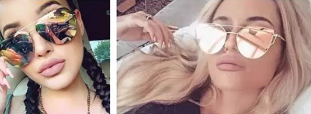凹造型必备单品墨镜也没能抵挡它的吸引力~各种淡山茱萸粉色墨镜占据了ins达人的半壁江山~没个淡山茱萸粉眼镜真的不好意思打招呼了呢~
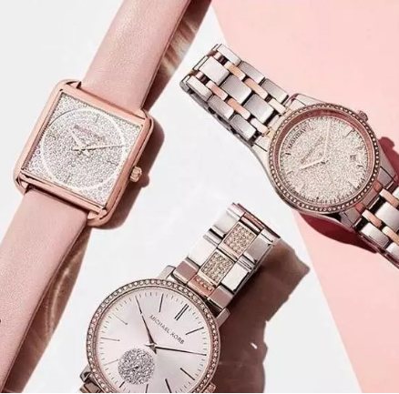手表也是超美~金属材质更能凸显淡山茱萸粉的高贵气息，再配上一些小碎钻，总能给人价值不菲的感觉~
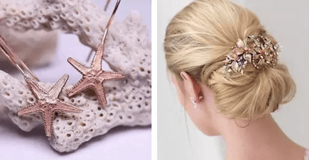一些小耳环、小发卡作为装饰，也能让人显得高雅不少~
美妆类
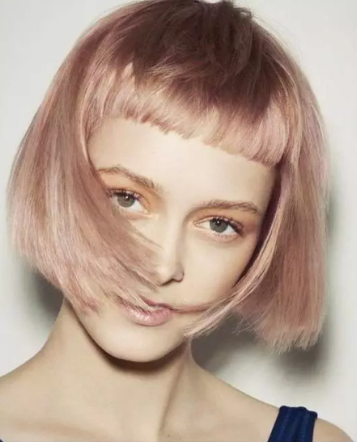一头淡山茱萸粉真的超前卫，在阳光下闪耀呈现一种金属感的美，整个人都像芭比娃娃了呢~真的可以猛增你的魅力指数，让你在人群中脱颖而出。
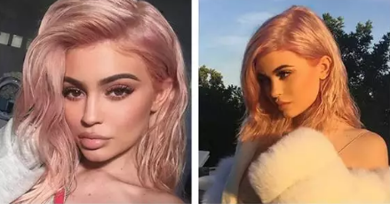你完全不必担心它只适合白皮MM，看看wuli金小妹，配上一身小麦肌，特带性感范儿~而且你也不必担心要不要染个同色眉毛，黑黑的完全没问题！
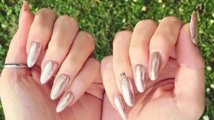淡山茱萸粉+漆面的美甲效果我给120分！够酷又够科技感~就算不化妆戴着墨镜口罩出街，光看手也足够吸睛的啦~
这个夏天，用淡山茱萸粉打造专属你的漂亮外表吧~相信你一定是个超凡脱俗的可人儿！
不过，漂亮的粉色妆容也是需要好肌肤做基础！现在大家也都为了保持肌肤的年轻状态做了很多努力，但有的时候会发现效果可能差强人意，也许除了外在努力，也需要内在的调养，这是现在最in的美丽建议~
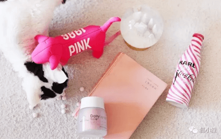今天给大家推荐狐狸君的萌粉新武器：
玫琳凯怡日健粉妍片~别看她又萌又可爱就小瞧它，
它可是能帮助我们由内而外透出美丽的健康小帮手。
狐狸菌选它，也是因为它可以完全满足作为处女座狐狸菌的完美主义强迫症！
玫琳凯是全球最大的护肤品直销公司，这次推出的新调养品粉妍片，也拿到了国家保健食品的认证资格，跟外面那些妖艳的三无产品简直不是一个级别~（敲黑板，不要乱吃，不要乱吃，不要乱吃）那些不靠谱的保养品，吃不出好不要紧，顶多是浪费了点银子，吃坏了身体可真的要后悔一辈子。
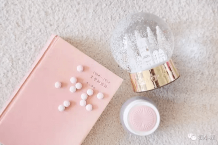其次，吃保健品要看看它的功效是否安全可靠。我研究之后发现，这枚萌粉小丸子的强大功效源自于具备欧洲多国纯正血统~
 第一个关键成分就是EGCG，这个源于瑞士技术，由拥有制药研发背景的百年欧洲公司提供，提取自绿茶，纯度高达94%,是普通绿茶的18倍，可谓是抗氧化界的战斗机，有助于消除人体疲劳时产生的自由基，帮助表皮皮肤修护、减少胶原蛋白的降解。
第一个关键成分就是EGCG，这个源于瑞士技术，由拥有制药研发背景的百年欧洲公司提供，提取自绿茶，纯度高达94%,是普通绿茶的18倍，可谓是抗氧化界的战斗机，有助于消除人体疲劳时产生的自由基，帮助表皮皮肤修护、减少胶原蛋白的降解。
 另一大成分叶黄素，提取自天然万寿菊，同样来自高标准的瑞士，从种子筛选至收成皆采用完整可追溯制度，血统纯正强大。它不仅能清除自由基，还能有效减少UVA/UVB/蓝光对眼睛和皮肤的损伤，对于现在机不离手的我们是不是也是福音？别忘了，明眸善睐才是青春的标志。
另一大成分叶黄素，提取自天然万寿菊，同样来自高标准的瑞士，从种子筛选至收成皆采用完整可追溯制度，血统纯正强大。它不仅能清除自由基，还能有效减少UVA/UVB/蓝光对眼睛和皮肤的损伤，对于现在机不离手的我们是不是也是福音？别忘了，明眸善睐才是青春的标志。
 小丸子里面还含有维生素C和E，连维生素C和E都不是普通人家的孩子，而是分别来自英国和法国，协同作用抗氧化，效果可想而知啦~
小丸子里面还含有维生素C和E，连维生素C和E都不是普通人家的孩子，而是分别来自英国和法国，协同作用抗氧化，效果可想而知啦~
这么多具有吸引力的有效成分浓缩到一颗粉色的“爱心”里，再也不用每天吃一堆那么麻烦啦~而且粉粉嫩嫩的颜色和萌萌哒爱心，对于颜值控的狐狸菌来说，简直是一记暴击~少女心都被满足了~~
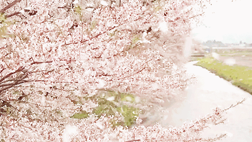其实，每个姑娘都懂得抗氧化是多重要，就是帮你年轻的原动力啊！想保持青春健康，皮肤年轻，最重要就是抗氧化！如果你还不懂，那么狐狸菌就给你普及一下：
人的生命活动是离不开氧气的~每个器官组织和细胞的新陈代谢也都有氧的参与~过程中就会产生对肌体有害的氧化反应，导致蛋白质变性、酶失活或DNA损伤和产生自由基！
当然，人体内部本身就有抗氧化系统，可随着年龄增长，这些系统不够给力，那么就需要外界获取~否则就会产生氧化，比如皮肤老化、松弛、出现细纹。
见过切开的苹果放置在空气中吧？皱皱巴巴就是氧化了~跟人体是一个道理！
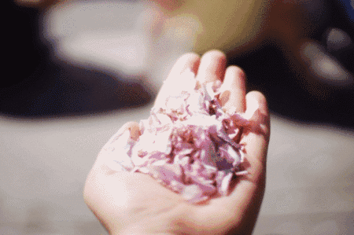有一句话是狐狸菌一直奉行的真理：“谁会介意得到更好”，我们对于美丽的执着，对于青春常驻的追求，不也是出于希望看到更好的自己吗~狐狸菌认为，想要美得纯粹，美得持久，光有外在的修饰和保护是不够的，还需要营养均衡，身心和谐，健健康康的，才可以做个漂亮宝贝儿~
热爱与追逐时尚的我们，当我们努力着了解流行的趋势，掌握着时尚的风向标~漂亮的肌肤，美丽的头发，健康的身体~内外兼美才是我们的终极目标哟。
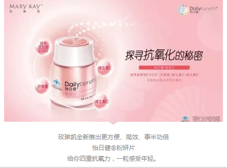